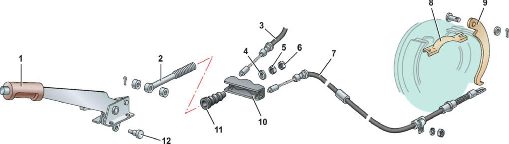
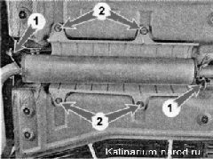
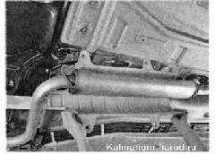
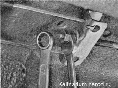

Стояночная тормозная система предназначена для предотвращения самопроизвольного движения автомобиля во время стоянки.
Рычаг привода стояночного тормоза двумя тросами связан с тормозными механизмами задних колес. При поднятии рычага в верхнее положение рычаги, установленные на задних колодках, поворачиваются и начинают давить на распорные планки. При этом колодки задних тормозных механизмов раздвигаются и фиксируют барабан от проворачивания.

Стояночная тормозная система: 1 — рычаг стояночного тормоза; 2 — тяга рычага; 3 — трос привода тормозного механизма правого заднего колеса; 4 — шайба; 5 — регулировочная гайка; 6 — контргайка; 7 — трос привода тормозного механизма левого заднего колеса; 8 — распорная планка; 9 - рычаг; 10 - уравнитель тросов; 11 — резиновый чехол; 12 — ось тяги
РЕГУЛИРОВКА
Ход рычага стояночного тормоза должен составлять 2—4 щелчка. В процессе эксплуатации автомобиля допускается увеличение хода рычага до восьми щелчков.
Если ход рычага составляет шесть и более щелчков, отрегулируйте привод стояночного тормоза.
Для выполнения работы потребуется смотровая яма или эстакада.
Последовательность выполнения
1. Подготавливаем автомобиль к выполнению работы.
2. Поднимаем рычаг стояночного тормоза до упора вверх, определяя величину его хода. Если он составляет менее 2 щелчков, необходимо удлинить привод, а если более 6 — укоротить.
3. Полностью опускаем рычаг стояночного тормоза.
4. Снимаем подушки с кронштейнов дополнительного глушителя 1 . Торцовым ключом отворачиваем четыре гайки 2 крепления защитного экрана.

5. Оттянув дополнительный глушитель от днища автомобиля, подкладываем под трубу глушителя деревянный брусок. Извлекаем защитный экран.

6. Удерживая рожковым ключом на 13 мм регулировочную гайку от проворачивания, накидным ключом на 13 мм ослабляем затяжку контргайки.

7. При отворачивании регулировочной гайки привод удлиняется, при заворачивании укорачивается.
8. Периодически в процессе регулировки проверяем ход рычага.
Примечание
Если длины резьбовой части тяги не хватает для регулировки хода рычага, необходимо заменить тросы привода, а при сильном износе накладок и тормозные колодки.
9. Отрегулировав ход рычага стояночного тормоза, вывешиваем заднюю часть автомобиля. Проверяем легкость вращения задних колес и надежность их фиксации стояночным тормозом.
10. Если тормозные колодки не мешают вращению колес, фиксируем регулировочную гайку контргайкой. Устанавливаем защитный экран на место.
11. Проверяем работоспособность стояночной тормозной системы: на подъеме с уклоном в 23 % она должна надежно удерживать автомобиль в неподвижном состоянии. При необходимости проверяем состояние деталей привода стояночного тормоза, состояние задних тормозных колодок и тормозных барабанов. Неисправные и изношенные детали заменяем. После чего повторяем регулировку.
|